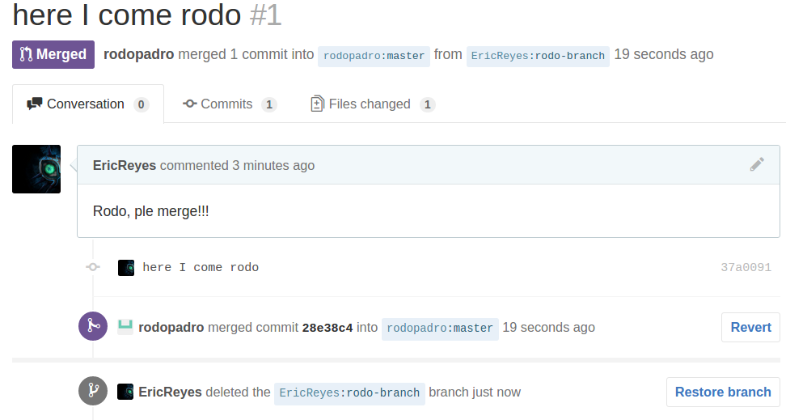

Semana I Eric Reyes report.
Noob
Create GitHub account.
Already Have a GitHub account EricReyes
Create a new GitHub repository form the GitHub web interface.
Create a local repository on your computer.
Clone a repository from GitHub to your computer.
Add a file to your local repository.
Remove a file from your local repository.
Edit a file via the GitHub web interface.
Add a file via the GitHub web interface.
Delete a file via the GitHub web interface.
Pull changes from GitHub to your local repository.
A possible state is that there are no changes and working directory is clean.
Also, there may be changes that were made, but not staged .
You may track these changes with “git add”. We haven’t commited these changes, but we have staged them with add.
There may be untracked files. Which means that new files were added to the repository but git in not keeping an eye on them. for this we can also use ‘git add’.
`git log`, This is awesome when working in teams. You can see every single commit everyone has made so far, have their name and email (just in case) and also have the id of the commit. So you can cherry pick these commits (choose what commits you want to keep) or remove specific changes in the project, even when they are not that recent.
This is the history of the commits, and you have a comment in each, so you know what has been done.
Already explained this states before.
(It is kinda scary to writh ‘git push origin master’ this is dark magic)
“git show v1.0” detailed info about the tag
We cannot push tags the same way of commits, we have to explicitly write what tag we want to pull or push.
Also applies the same for pulling tags
I made an alias for the soft reset.
We want this because there are some files that don’t need to be push to master, and are local use only.
The .gitconfig file for example. This is the file for the settings on the local git, and if we were to push this to master, it will create a mess with everyone else’s .gitconfig
The previous image shows the .gitignore file for another project I work on. This file tells git to ignore all those files and not track them, most of them are temporary files that don’t matter or local configuration files.
You want to have source files tracked, not compiled files, Those can be generated from source files and don’t need to be tracked by git.
My favourite text editor so far is
sublime text.
It does have support for git, it gives you a small
boost on speed on working with git and editing files
https://scotch.io/tutorials/using-git-inside-of-sublime-text-to-improve-workflow#requirements
Both show information about what’s happening without changing to terminal, and also let you run git commands
I will not install my own package. I think it might get me some trouble.
DiffMerge
Get DiffMerge to work with your git toolset.
I
downloaded DiffMerge and started configuring it with the help
of
http://twobitlabs.com/2011/08/install-diffmerge-git-mac-os-x/
I’m
not sure if I will be using this often, but I will really try to use
the merge conflict tool.
It may be useful when in panic.
Branching
Work with a partner to fork their repository via GitHub. Now you can modify and work with your own copy of that repository. You can fork anything on GitHub, that is what the community is about!
Now since you are working with a partner you can organize to create a pull request so that your modifications on your forked repository go back to her main repository that you forked from.
I forked from rodos repo, cloned the fork to my local repo, edited a document, pushed a new branch to his repo and finally clicked on create PR for the branch I made.

We finally merged and deleted the branch.
GitHub Pages
You can get free hosting with GitHub Pages. Set up your own page with this.
http://ericreyes.github.io/
I
have made this webpage for a hackathon from before. (Note that the
front page is missing an image because facebook!)
To get a full score on this portion use a static website generator like Jekyll, OctoPress, Hexo or any other choice to “build” a site using that publishes to GitHub. Another option is to use GitHub to develop your site but synchronize the built site to some other location.